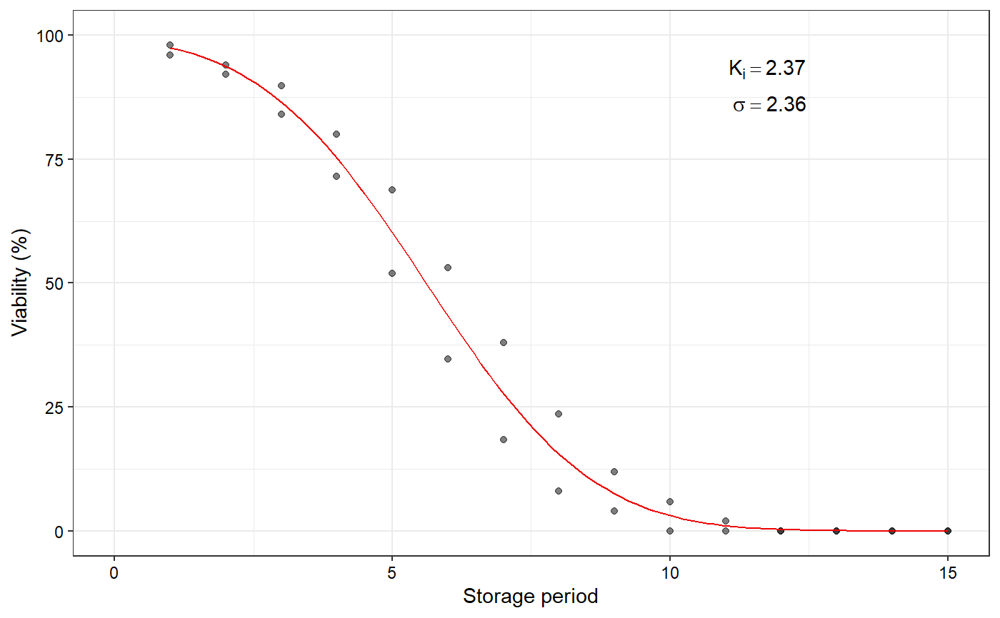
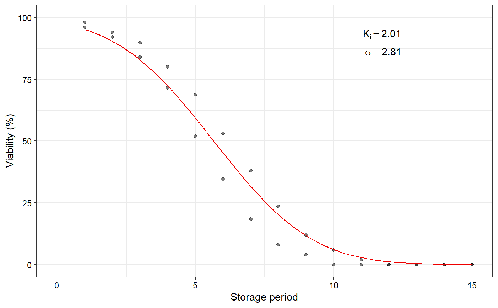
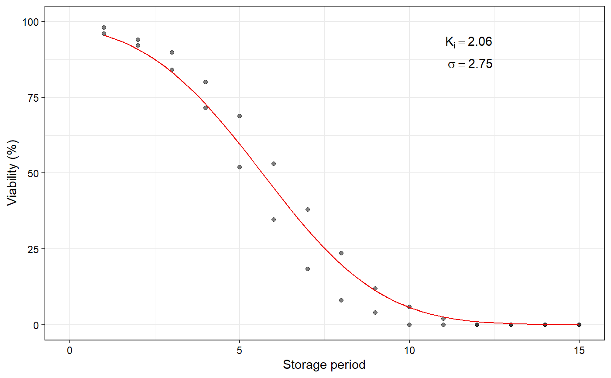

FitSigma objectR/plot.FitSigma.R
plot.FitSigma.Rdplot.FitSigma plots the fitted seed viability/survival curve from a
FitSigma object as an object of class ggplot.
# S3 method for FitSigma plot(x, limits = TRUE, annotate = TRUE, ...)
| x | An object of class |
|---|---|
| limits | logical. If |
| annotate | logical. If |
| ... | Default plot arguments. |
The plot of the seed viability curve as an object of class
ggplot.
data(seedsurvival) df <- seedsurvival[seedsurvival$crop == "Soybean" & seedsurvival$moistruecontent == 7 & seedsurvival$temperature == 25, c("storageperiod", "rep", "viabilitypercent", "sampsize")] #---------------------------------------------------------------------------- # Generalised linear model with probit link function (without cv) #---------------------------------------------------------------------------- model1a <- FitSigma(data = df, viability.percent = "viabilitypercent", samp.size = "sampsize", storage.period = "storageperiod", generalised.model = TRUE)#>plot(model1a)#---------------------------------------------------------------------------- # Generalised linear model with probit link function (with cv) #---------------------------------------------------------------------------- model1b <- FitSigma(data = df, viability.percent = "viabilitypercent", samp.size = "sampsize", storage.period = "storageperiod", generalised.model = TRUE, use.cv = TRUE, control.viability = 98)#>plot(model1b)#---------------------------------------------------------------------------- # Linear model after probit transformation (without cv) #---------------------------------------------------------------------------- model2a <- FitSigma(data = df, viability.percent = "viabilitypercent", samp.size = "sampsize", storage.period = "storageperiod", generalised.model = FALSE)#>plot(model2a)#---------------------------------------------------------------------------- # Linear model after probit transformation (with cv) #---------------------------------------------------------------------------- model2b <- FitSigma(data = df, viability.percent = "viabilitypercent", samp.size = "sampsize", storage.period = "storageperiod", generalised.model = FALSE, use.cv = TRUE, control.viability = 98)#>plot(model2b)